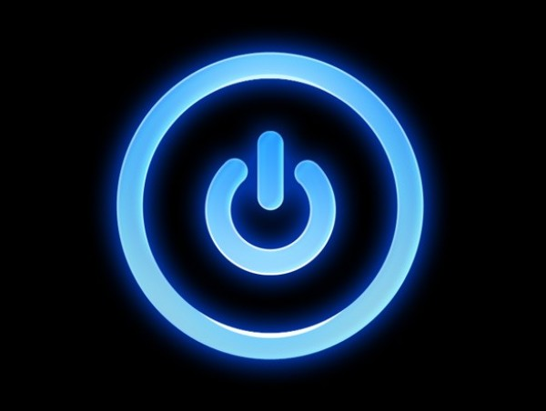
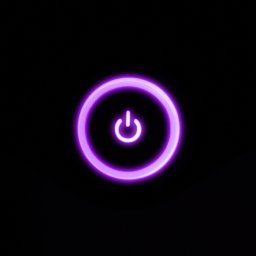

<ion-content [fullscreen]="true">
  <ion-header>
    <ion-toolbar class="ion-text-center toolbar-color">
      <ion-title *ngIf="!activado" class="title-container">Presione para activar</ion-title>    
      <ion-title *ngIf="activado" class="title-container">Presione para desactivar</ion-title>
    </ion-toolbar>
  </ion-header>

  <div class="container">
    
    
  </div>
  
  <div class="bottom-button">
    <ion-button shape="round" fill="outline" expand="full" size="large" class="logout"  title="Cerrar sesión" (click)="cerrarSesion()">
      Cerrar Sesión
    </ion-button>
  </div>

</ion-content>